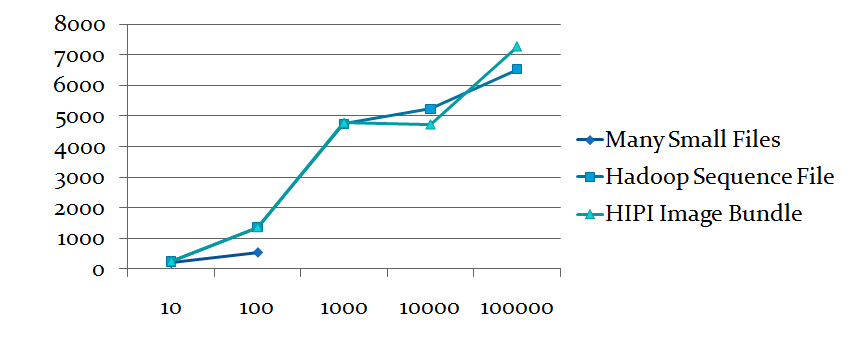
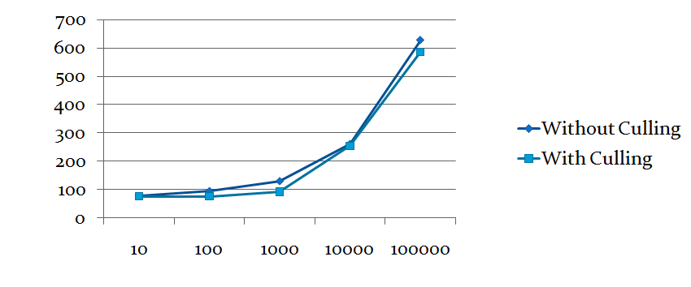

Experiments
We performed several experiments designed to measure the efficiency of the HIPI framework as compared to several alternatives. These experiments were performed using a cluster provided by the National Science Foundation, Google, and IBM through the Cluster Exploratory (CluE) program. The machines in this cluster each contained seven Intel Xeon 64-bit processors running at 2.8 GHz with 8 GB of shared memory. Altogether, this cluster provided 416 compute nodes that could execute 834 map operations in parallel and 830 reduce operations in parallel. This cluster was running Apache Hadoop version 0.20.0.
 Note that attempting to process 10,000 individual files or more resulted in a MapReduce setup phase that timed out. Also, note that HIBs provide significant advantages over many small files and the Hadoop Archive filesystem, although Hadoop sequence files offer more competitive performance. HIPI includes the SeqImageBundle class that facilitates creating Hadoop sequence files from image collections.
Note that attempting to process 10,000 individual files or more resulted in a MapReduce setup phase that timed out. Also, note that HIBs provide significant advantages over many small files and the Hadoop Archive filesystem, although Hadoop sequence files offer more competitive performance. HIPI includes the SeqImageBundle class that facilitates creating Hadoop sequence files from image collections.
HIB Experiment
This experiment was designed to study the performance of the HipiImageBundle (HIB) versus three common alternatives: storing images as individual files on the HDFS, using an Apache SequenceFile, or using the Apache Hadoop Archives (or HAR) file system. We measured the running time of a MapReduce program that essentially performs a "nop" (empty map and reduce tasks) in order to measure the amount of time it takes to simply read and decoding the images from the HDFS and present them to the mapper. The following graph plots measured wall clock running time in seconds (y-axis) as a function of the number of input images (x-axis) for these different representations. (See above for description of the cluster that was used to take these measurements.)Covariance Experiment
We also measured the performance of using many individual files, a Hadoop Sequence File, or a HipiImageBundle (HIB) in conjunction with the distributed Principal Components of Patches example program. This experiment reflects a more realistic computational load in the map and reduce layers. The running time for each input type is reported in seconds along the y-axis as a function of input size (number of images) along the x-axis:  The many small files approach was not able to support more than 100 images for this more computationally intensive program. Also, Hadoop Sequence Files and HIBs provided comparable performance.Culling Experiment
HIPI's CullMapper class is a useful extension of the Hadoop Mapper class that allows a MapReduce program to efficiently skip images that do not meet a particular set of criteria. In this experiment, we measured the time taken to compute the average image captured using a Canon PowerShot S500 digital camera with a resolution of 2592x1944 from a collection of images downloaded from Flickr. Here is the cull() method that achieves this goal:
public static class MyMapper extends CullMapper<ImageHeader, FloatImage, NullWritable, FloatImage> {
public boolean cull(ImageHeader key) throws IOException, InterruptedException {
if (key.getEXIFInformation("Model").equals("Canon PowerShot S500") && key.width == 2592 && key.height == 1944) {
return false;
} else {
return true;
}
}
...
The following graph plots the running times (in seconds, along y-axis) as a function of the input size (in number of images, along x-axis) for different input sizes:

Note that culling provides a small improvement in performance. The specific degree of improvment is, naturally, a matter of how many images in the HIB meet the culling criteria.